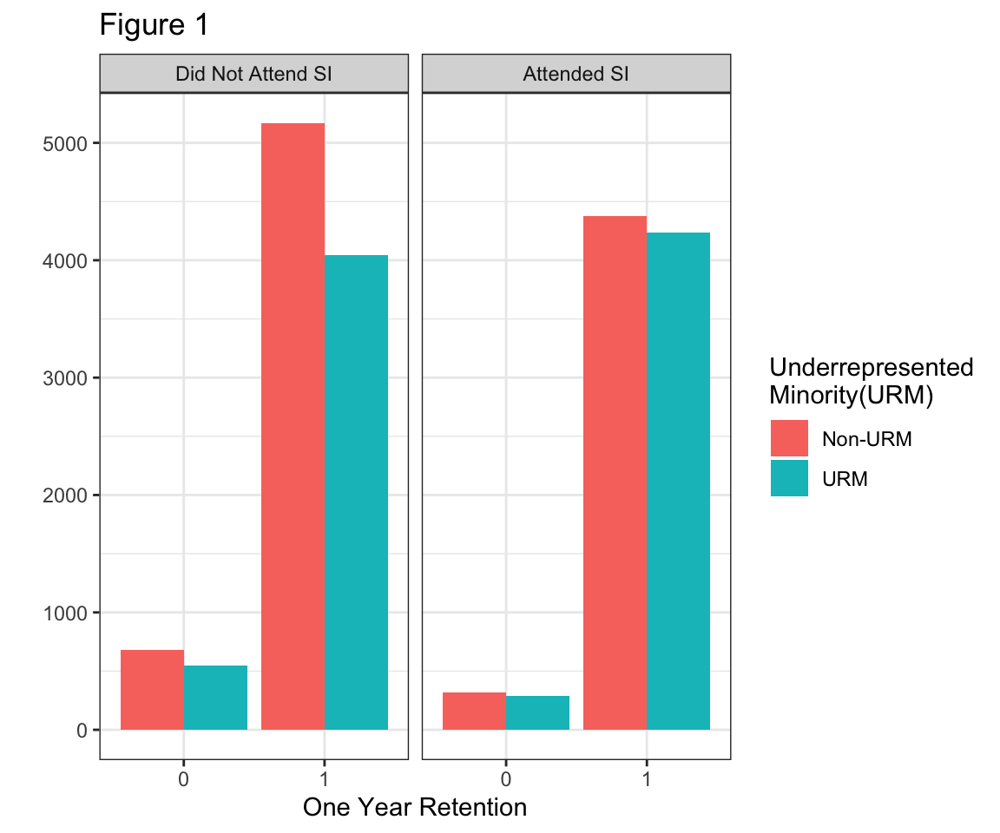
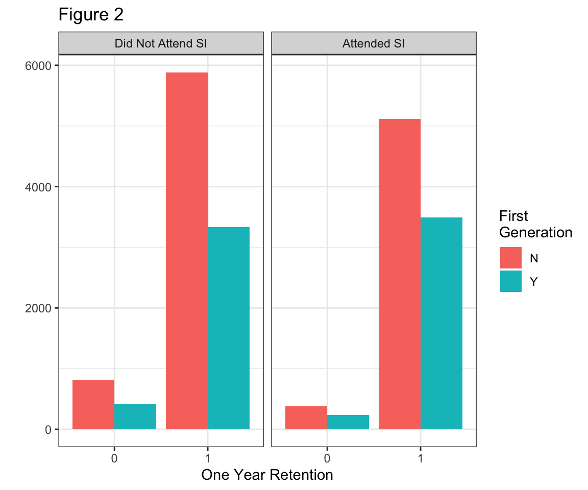
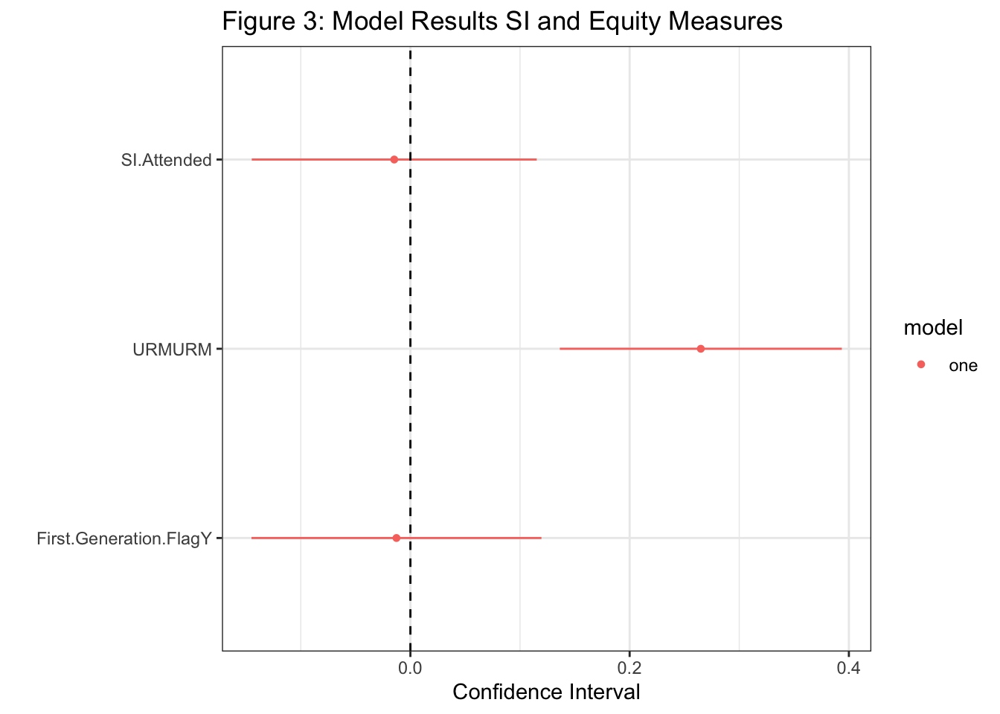
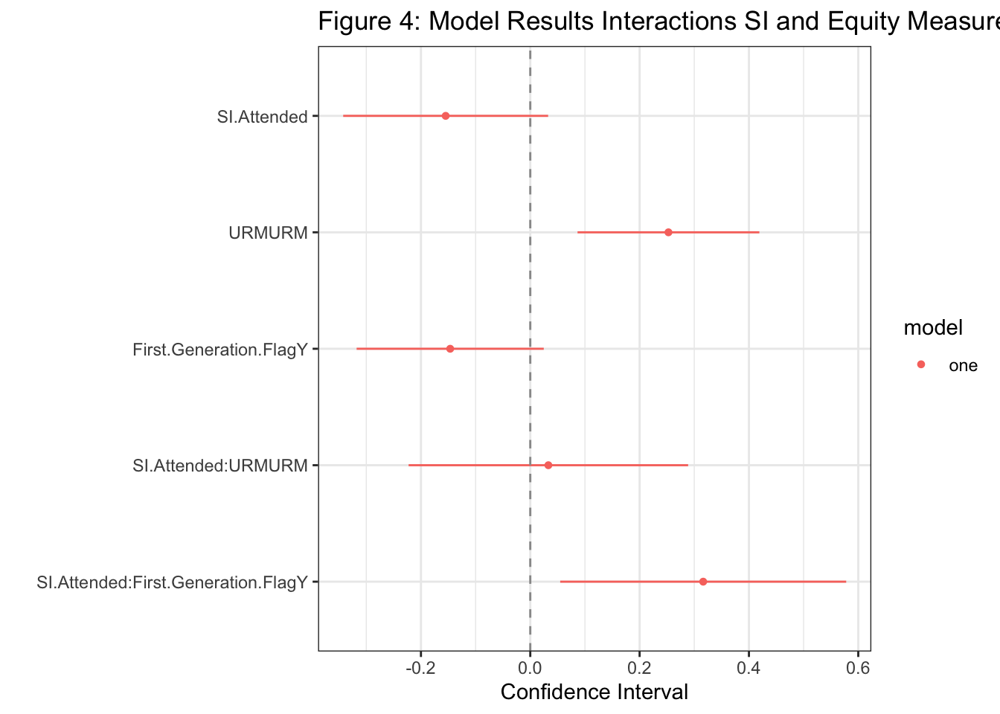

Exploring the Effect of Supplimental Instruction on Equity Gaps
Faith Fatchen3, Skip Moses1, Rica Rebusit2, Joseph Shifman1
2 Department of Computer Science, California State University, Chico
3 Department of Economics, California State University, Chico
1 Department of Mathematics and Statistics, California State University, Chico
Introduction
Abstract
It is the top mission of our university to retain and graduate students who are well prepared for careers or graduate school. CSU, Chico observed a 5.1% percentage point decrease in first year retention rate from 2015 (85.8%) to 2020 (80.7%). This decrease was slightly larger for first-generation college students at 5.4% percentage points over the same period (83.4% in ‘15 to 78% in ‘20) compared to their counterparts who have college educated parents (88.6% in ‘15 and 83.9% in ‘20, a 4.7% percentage point decrease). This difference is called an equity gap. Supplemental Instruction (SI) is a program offered at numerous CSU campuses to support students in selected courses by providing peer-assisted discussion sessions. These courses are selected based on their difficulty and the rate which students do not pass. This study assesses the impact of SI on reducing the equity gaps in the overall pass rate for a course, on the individual student grade for a course, and individual student 1 year retention. Equity gaps are being measured on students of underrepresented minority status and first-generation students. Multivariable statistical models such as linear and logistic regression are used to account for variability in the equity gap from sources other than SI. Additionally, Coarsened Exact Matching is used to estimate causal impact of SI on first year retention by matching students who did/did not attend SI on their likelihood of attending SI.
What is Supplemental Instruction?
- Supplemental Instruction (SI) is designed to increase student success in historically difficult courses by utilizing peer-assited study session. The SI leader has performed well in the course.
What is an Equity Gap?
- An equity gap refers to differences in educational outcomes and student success across race/ethnicity, socioeconomic status, gender, physical or mental abilities, and other demographic traits and intersectionalities.
Methods
| Variable | Chancelor.Data | Sample.Data |
|---|---|---|
| Mean Number of Students | 16984 | 16075 |
| Mean Percentage of Females | 54.27 | 53.34 |
| Mean Percentage of Males | 45.72 | 46.61 |
| Mean Percentage of First Gen. | 50.94 | 38.13 |
| Mean Percentage of URM | 36.66 | 37.55 |
Student Level
- The student level explores the success of an individual student. We define student success as one year retention. This means the student was still enrolled one year from the course. At the student level, the questions we are addressing is “Does SI have an impact on the one retention”. Then, to consider the the measures of equity previously defined, “Does the impact of SI differ between the equity groups”. We limited our sample to first time freshman. Hence, they should still be enrolled one year later. Additionally, is primarily found in GE classes, so transfer students are likely not enrolling in these course at CSU Chico. Figure 1 presents one year retention for those who did and did not attend SI by one of the measures of equity, URM.

Course Level
=======The impact of SI can be addressed at the class level or the individual student level.
Here, we investigate both. We obtained data from CSU Chico Institutional Research.
The data included course information, student demographics, and student course grades. We considered measures of success at both the student level and course. The methods for these different explorations are detailed below.
Methods
Student Level
The student level explores the success of an individual student. We are addressing the following questions:
Does SI have an impact on the one retention?
Does the impact of SI differ between the equity groups?
We define student success as one year retention. This means the student was still enrolled one year from the course.
We limited our sample to first time freshman and General Education Courses. Figure 1 presents one year retention for those who did and did not attend SI by one of the measures of equity, URM.


Figure 1: caption
Course Level
- Course level displays the DWF rates of a course and we address the impact SI has on DFW rates. We consider the question, “Will SI have an impact on reducing equity gaps in the overall pass rate for a course”
Figure 3 compares DWF Rate of URM and Non-URM students that did not attend SI (column 0) and students that did attend SI (column 1). Figure 4 compares DWF Rate of the percentage of students that are First Generation who did not attend SI (column 0) and students that did attend SI (column 1). Both figures show SI reduces the DWF rates of equity gaps.

Figure 2: caption

Figure 3: caption
Student Level Models
<<<<<<< refs/remotes/origin/skip_branch * Figure 3, presents the results from a model considering the first student level question, “Does SI have an impact on the one retention”. The results from this model imply, that SI does not a have a significant impact on student one year retention. If the student is first generation is also insignificant. Additionally, this model also implies that a student that is classified as URM is positively related to one year retention. Figure 4, presents the results from a model considering the second student level question “Does the impact of SI differ between the equity groups”. Again, SI attendance was found to be insignificant and URM is positively related. Additionally, if the student is an URM and attended SI, was also found to be insignificant. If the student is first generation is also found to be insignificant. However, if the student is first generation and attends SI the probability of year retention increases, and this relationship is significant. For both models, other covariates that may capture variation in one year retention were included in the model that are not presented here. * *
=======- Figure 5, presents the results from a model considering the first student level question, “Does SI have an impact on the one retention”. The results from this model imply, that SI does not a have a significant impact on student one year retention. If the student is first generation is also insignificant. Additionally, this model also implies that a student that is classified as URM is positively related to one year retention. Figure 6, presents the results from a model considering the second student level question “Does the impact of SI differ between the equity groups”. Again, SI attendance was found to be insignificant and URM is positively related. Additionally, if the student is an URM and attended SI, was also found to be insignificant. If the student is first generation is also found to be insignificant. However, if the student is first generation and attends SI the probability of year retention increases, and this relationship is significant. For both models, other covariates that may capture variation in one year retention were included in the model that are not presented here.


Figure 4: caption
Course Level Models
-
<<<<<<< refs/remotes/origin/skip_branch
Conclusions
The results from these initial models did not find significant results for our variables of interest. However, this could be due to underlying causes such as omitted variable bias. The following section describes additional work that may help us better consider our questions.
>>>>>>> localFuture Work
- Ideally, we want to identify attending SI as a treatment, and explore it’s causal effect on equity gaps.
- In order to accomplish this, we will employ Coarsened Exact Matching to control for counfounding variables.
- With this matching we can estimate the effect of SI on equity gaps with SI as a treatment as in a clinical trial.
Conclusions
=======Acknowledgments
We are extremely grateful for the guidance provided by Dr. Robin Donatello and Dr. Eric Wasinger. We are also thankful for our peers in MATH485 for providing helpful feedback thoughout to project.
>>>>>>> local